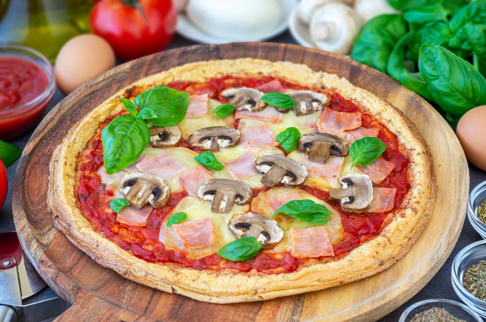

Los ingredientes habituales de una masa de pizza son harina, agua, levadura y sal. Sin embargo, esta receta no es precisamente lo que se dice baja en carbohidratos, por lo que no es muy adecuada si se sigue algún tipo de dieta baja en estos nutrientes. Por suerte, existe una forma de disfrutar de la pizza evitando este problema: con una receta de masa de pizza que quizás nunca hubieras imaginado.
Sigue leyendo porque vamos a enseñarte a hacer una masa de pizza donde nos libramos de la harina de trigo y con ello de las calorías que normalmente tiene. Hay varias opciones, pero la que hoy te presentamos tiene una consistencia tan ligera como su nombre: la pizza nube.
¿Cómo hacer una pizza sin harina de trigo? La solución esta vez la encontramos en un ingrediente muy común en nuestras cocinas: el huevo. Y más concretamente en sus claras. Lo que haremos será montar las claras al punto de nieve, con lo que conseguiremos una masa con una textura muy ligera. Para mejorar su sabor, en la receta completa de la pizza nube que puedes ver aquí te contamos un par de trucos, aunque ya te adelantamos que la cosa va de especias.
Por lo que respecta a los toppings de la pizza puedes usar los que más te gusten. En este caso haremos una sencilla pizza de jamón y champiñones, pero por supuesto eres libre de escoger los ingredientes que más te gusten. Si necesitas ideas esta recopilación de las mejores recetas de pizzas puede orientarte un poco.
